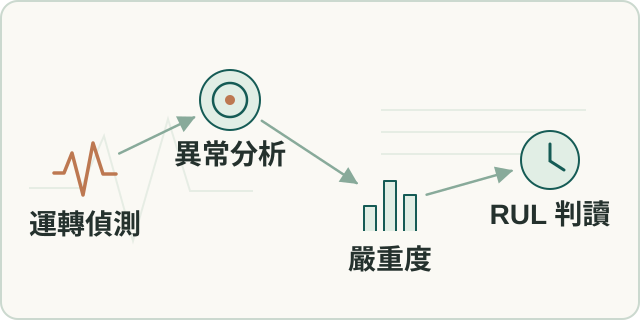

方法整理
工業設備診斷方法
串接運轉偵測、異常分析、嚴重度與剩餘壽命估計，保留資料不足時的降級條件。
- 我的角色
- 本人設計資料品質、運轉偵測、故障分類、ISO 及 RUL 的分層方法，檢查異常率分母及抽樣偏差。

工作流程示意（點圖放大）要解決的問題
故障型態、嚴重度及劣化時間回答不同問題，資料不完整時需揭露不確定性。
輸入、處理與產出
- 輸入
- 設備背景、取樣與觀測資料，以及運轉與波形覆蓋條件。
- 處理方式
- 分開運轉偵測、異常型態、嚴重度與時間外推，檢查異常比例使用的分母。
- 產出
- 逐層可解釋的診斷與信心資訊，資料不足時停止或降級。
適用範圍
時間窗抽樣仍屬研究比較，不將單一資料集結果推廣為全面準確率。
核心問題與我的做法
診斷型態、嚴重度與壽命回答不同問題
若把故障分類、振動級別和壽命混成單一健康分數，使用者難以知道數值代表原因、程度還是時間。
將運轉區間、故障型態、嚴重度與時間外推分層。 本人主導從設備資訊、前處理、運轉偵測到分類、ISO、RUL及報告的順序，保留每一層的資料與信心。
建立可解釋、可追查的診斷流程；資料不足時降級或停止判讀，讓報告清楚呈現能支持到哪一層結論。
異常百分比先問分母是什麼
每段運轉只取極值容易實作，卻讓長短運轉段各算一票，未公平反映暴露時間。
接受利害關係人的挑戰，提出固定時間窗比較，同時承認原始波形覆蓋不足。 本人從 peak 方法推進 time-bin 研究，拆開事件比例、時間比例與已觀測波形比例，比較偏差、覆蓋與系統成本。
將統計定義和正式資料限制一起納入決策；time-bin 仍是研究比較，沒有宣稱已完成正式算法選型。
成果與驗證
建立分層診斷流程、資料不足時的降級規則及抽樣比較方法；抽樣策略仍在研究。
VAD · ISO 20816 · RUL